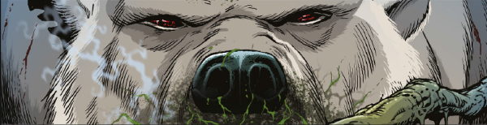

If Jaws were a polar bear.
It's a standalone series, with White Fury being an origin story. Later versions tend to be extra-dimensional or alternate versions. The original story stated that shako means killer in an undefined indigenous circumpolar language, although it's possible that's just been made up. At any rate, the name and the form are reused in times and spaces that would be impossible if not for either a new creature or narrative invention.
Art by Richard Elson
| Story Title | Parts | Pages | w indicates a wraparound coverCovers | Year(s) | Issues | Writer | Artist | Colourist | Letterer |
|---|---|---|---|---|---|---|---|---|---|
| Shako | 16 | 75 | 0 | 1977 | Reprints: 2KA'86 (partial, 43pp) X1820-35 | Pat Mills, John Wagner: 1‑4 John Wagner: 5‑16 various | Ramon Sola: 1, 6, 8, 10 Juan Arancio: 2‑4 Dodderio: 5 Lopez‑Vera: 7, 9, 11‑16 various | [b&w] | Jack Potter: 1‑6, 11‑15 Tony Jacob: 7 Peter Knight: 8 John Aldrich: 9‑10, 16 various |
No supertitle. Origin story. White Fury | 1 | 8 | 0 | 1977 | 2KA'78 | John Wagner | unknown | [b&w] | unknown |
From Armoured Gideon Features a crossover event with multiple (at the time) out of print characters.[The Collector] | 11 | 67 | 895: Simon Jacob 897: Simon Jacob 2 | 1994 | 889-899 | John Tomlinson | Simon Jacob: 1‑8,10‑11 Mike White: 9 (final panel 8) various | <-- | 1‑8,10‑11: Annie Parkhouse 9: Peter Knight various |
Linked to Hook JawHook Jaw vs. Shako | 1 | 7 | 0 | 2020 | Action 2020 | [Quint Amity] | Dan Lish | <-- | n/a |
From Judge DreddEnd of Days | 15 | 92 | 2184: Steven Austin & Quinton Winter 2185: Patrick Goddard & Dylan Teague 2189: Neil Roberts 2192: Richard Elson 2199: Paul Williams & Chris Blythe 5 | 2020 | 2184-2195, 2197-2199 | Rob Williams | Colin MacNeil: 1‑6 Henry Flint: 7‑15 various | Chris Blythe | Simon Bowland: 1 Annie Parkhouse: 2‑15 various |
From KingdomShako's Kingdom | 1 | 10 | 0 | 2020 | SFS25 | Dan Abnett | Richard Elson | <-- | Simon Bowland |
| >> Features << | |||||||||
| Shako | 1 | 2 | 0 | 2003 | p2004 | n/a | Jock | <-- | n/a |
| >> Floating Covers << | |||||||||
| Die, Polar! | ~ | ~ | 1 | 2006 | X18 | n/a | Cliff Robinson | <-- | n/a |
| year | episodes | pages |
| 1977 | 17 | 83 |
| 1978 | 0 | 0 |
| 1979 | 0 | 0 |
| 1980 | 0 | 0 |
| 1981 | 0 | 0 |
| 1982 | 0 | 0 |
| 1983 | 0 | 0 |
| 1984 | 0 | 0 |
| 1985 | 0 | 0 |
| 1986 | 0 | 0 |
| 1987 | 0 | 0 |
| 1988 | 0 | 0 |
| 1989 | 0 | 0 |
| 1990 | 0 | 0 |
| 1991 | 0 | 0 |
| 1992 | 0 | 0 |
| 1993 | 0 | 0 |
| 1994 | 11 | 67 |
| 1995 | 0 | 0 |
| 1996 | 0 | 0 |
| 1997 | 0 | 0 |
| 1998 | 0 | 0 |
| 1999 | 0 | 0 |
| 2000 | 0 | 0 |
| 2001 | 0 | 0 |
| 2002 | 0 | 0 |
| 2003 | 0 | 0 |
| 2004 | 0 | 0 |
| 2005 | 0 | 0 |
| 2006 | 0 | 0 |
| 2007 | 0 | 0 |
| 2008 | 0 | 0 |
| 2009 | 0 | 0 |
| 2010 | 0 | 0 |
| 2011 | 0 | 0 |
| 2012 | 0 | 0 |
| 2013 | 0 | 0 |
| 2014 | 0 | 0 |
| 2015 | 0 | 0 |
| 2016 | 0 | 0 |
| 2017 | 0 | 0 |
| 2018 | 0 | 0 |
| 2019 | 0 | 0 |
| 2020 | 17 | 109 |
| 2021 | 0 | 0 |
Comic strip data (excludes other content):